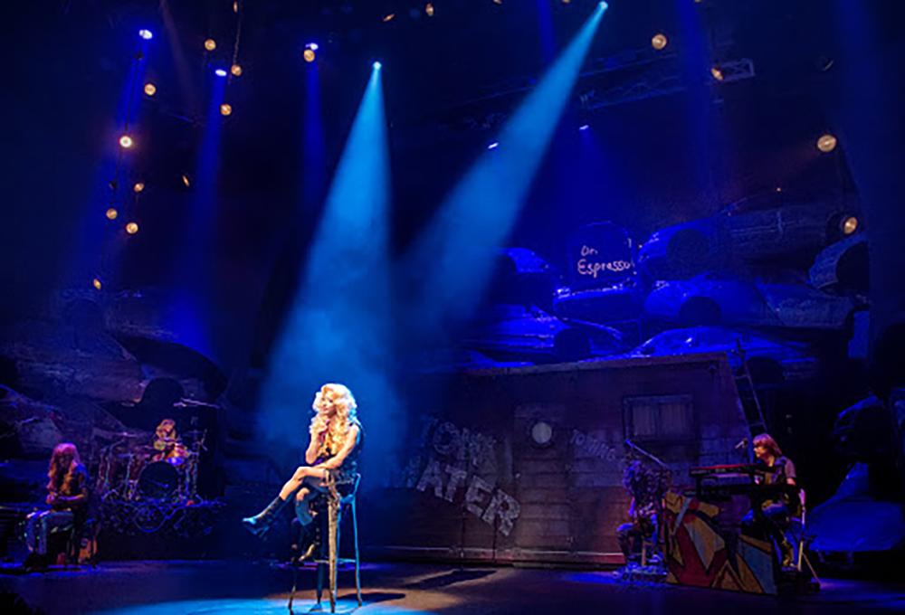

Hedwig and the Angry Inch
Summary
'Hedwig' is the main character's name, and she/he is the one who is leading the show. Everyone has dark days in their lives. Hedwig shares their stories with audiences, sometimes addressing the audience directly and asking them questions. While talking about their bad memories, she/he entertains you with jokes, dance, and anecdotes. Hedwig talks about life and emotions deeply but also entertains you. Audiences should related to her/his feeling because they have all been there sometimes. It's a one-night show in which he will sing his favorite rock songs to the audience. Audiences can stand up, dance, and sing along during this section.
Musical Number
- Tear Me Down
- The Origin of Love
- Random Number Generation
- Sugar Daddy
- Angry Inch
- Wig In A Box
- Wicked Little Town
- The Long Grift
- Hedwig's Lament
- Exquisite Corpse
- Wicked Little Town Reprise
- Midnight Radio
My Favorite Hedwig Casts
John Cameron Mitchell
John Cameron Mitchell (born April 21, 1963) is an American actor, playwright, screenwriter, singer, songwriter, producer and director. He is known as the writer, director and star of the 2001 film Hedwig and the Angry Inch, which is based on the stage musical of the same name. He also portrayed the role of Joe Exotic in the Peacock limited series Joe vs. Carole in 2022.
Oh Man Seok
Oh Man-seok (born January 30, 1975) is a South Korean actor. Best known for playing the titular transgender singer in rock musical Hedwig and the Angry Inch, Oh's acting career spans theater, television and film.
Lee Young Mi
Born in Seoul in 1974, she attended the University Song Festival in 1995 when she was a student in the Department of Political Science and Diplomacy at Ewha Womans University and won the gold prize. In 1998, he debuted under the stage name "Iami" and began his career as a singer, and then turned into a musical actor. She won the Popular Star Award at the 2005 Korean Musical Awards, considering her unique charisma and singing ability as an actress with ticket power. He released albums such as LEE YOUNG MI 1st single in 2009 and LOVE UNIVERSE in 2011 and held several solo concerts as a singer-songwriter. There are nicknames such as "Charisma Queen" and "Daehakro Idol" as irreplaceable attractions to the extent that not only grand theater musicals, but also small theaters and creative musicals are mentioned as the number one actress.
Band, the Angry Inch
Angry Inch Band and ItsHak appear on stage and the play begins with musical instrument setting. After all the setting, itzhak introduces Hedwig, who appears in the audience. (Tear me down) Hedwig, who opened the show by renting the set of the Fast and Furious musical, which was ruined as soon as it opened, talks about the car accident with Tommy Nossis, saying that he appeared in the newspaper recently. Then, "very accidentally," Tommy Nossis is said to be performing around the theater, and he overhears it through the back door under the guise of a vending machine, and Hedwig, who was expecting to tell him about himself when the article had already been published, gets annoyed and closes the back door of the concert hall when Tommy doesn't tell him about himself.
Opinion Forum
After watching Hediwg, what did you guys felt? Did you enjoy it? Or, did you not like it? Arts is all about freely sharing your thoughts and ideas.